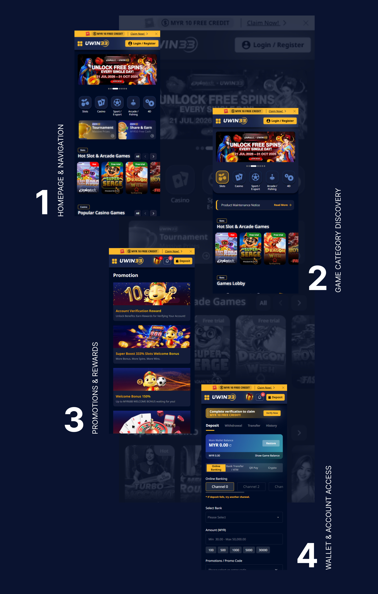
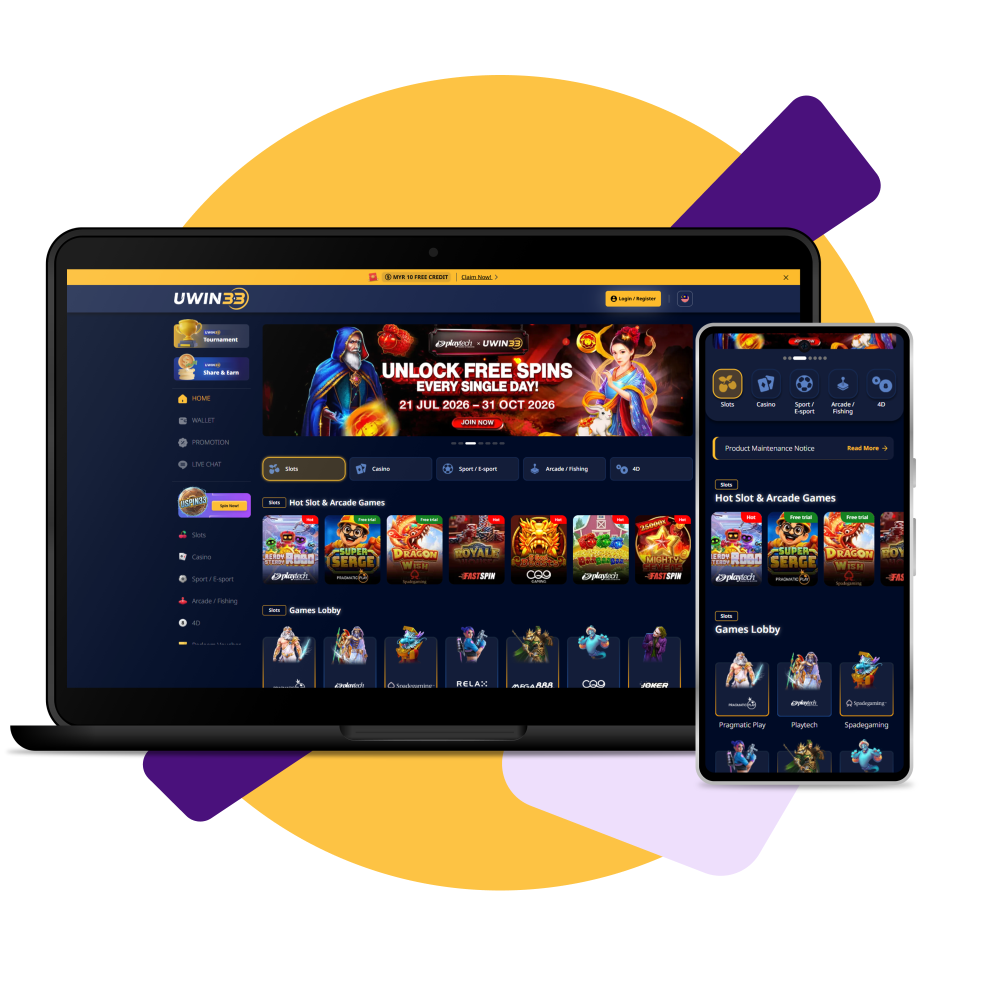
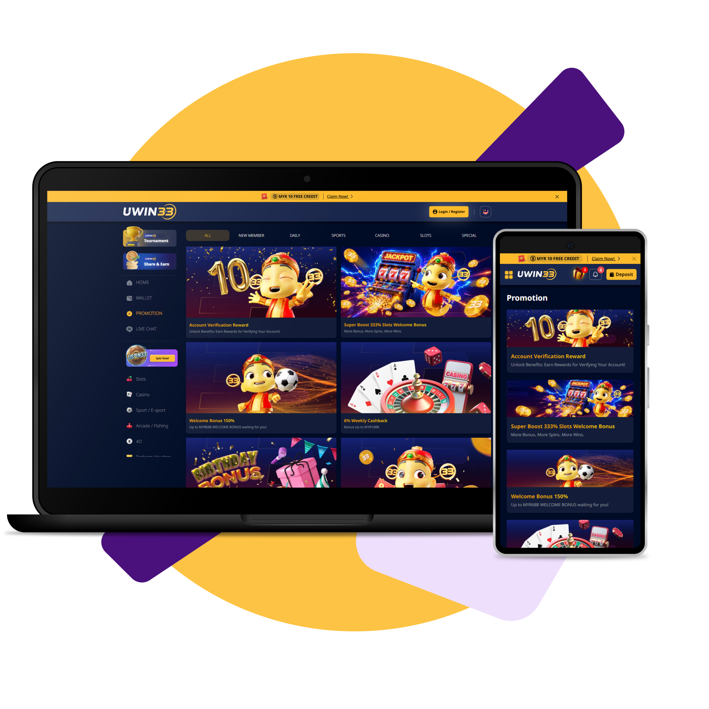
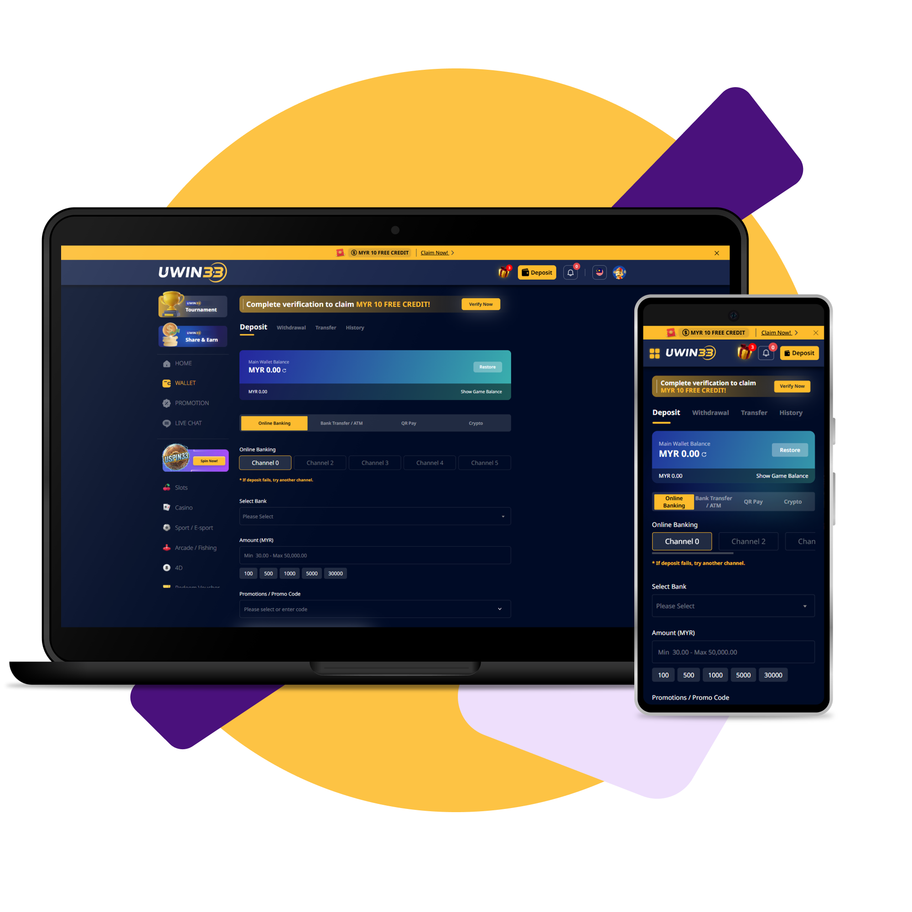
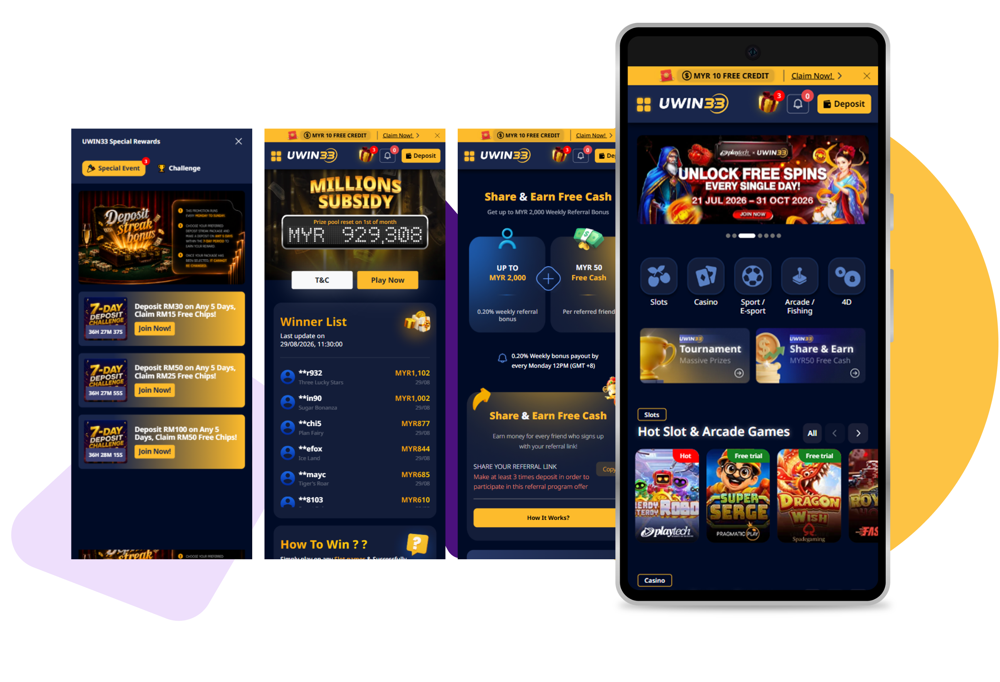
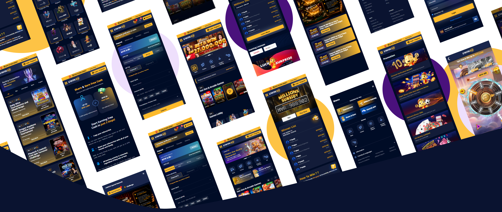

Find Your Game
I redesigned game discovery with clearer categories and simpler navigation, so users can get to the games they want faster.
UWin33 covers slots, live casino, sports, esports, arcade, 4D and wallet services. The problem was that everything competed for attention, so users had no clear place to start.
Clearer navigation and hierarchy help users find what they need in fewer steps.
Consistent UI patterns and clearer information make the experience feel more trustworthy.
A flexible design system makes it easier to add new features, promotions and markets later.





UWin33 brings slots, live casino, sports, esports, arcade, fishing, 4D, promotions, wallet services and account support into one platform. I used a dark navy visual system with bright accents, bold imagery, icon-based navigation and modular content sections to support quick browsing.
Because the website supports many different journeys, the revamp focused on hierarchy, navigation and the relationship between game categories, promotions, wallet functions and support. The goal was to make the platform feel more structured and consistent across desktop and mobile.

next project